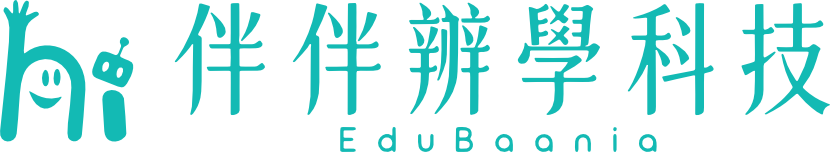
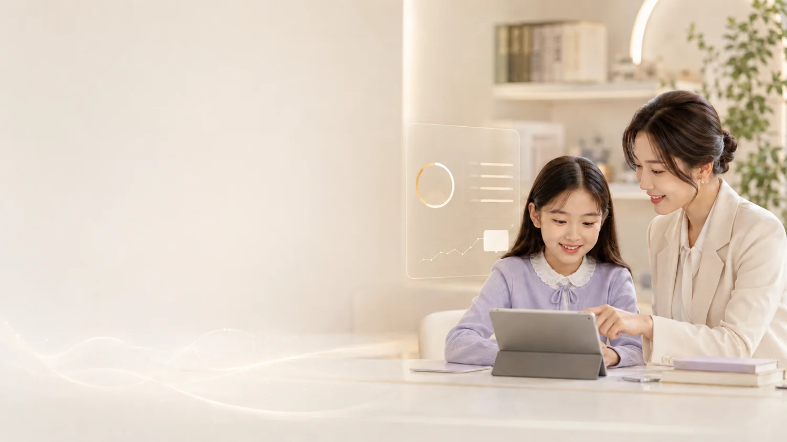
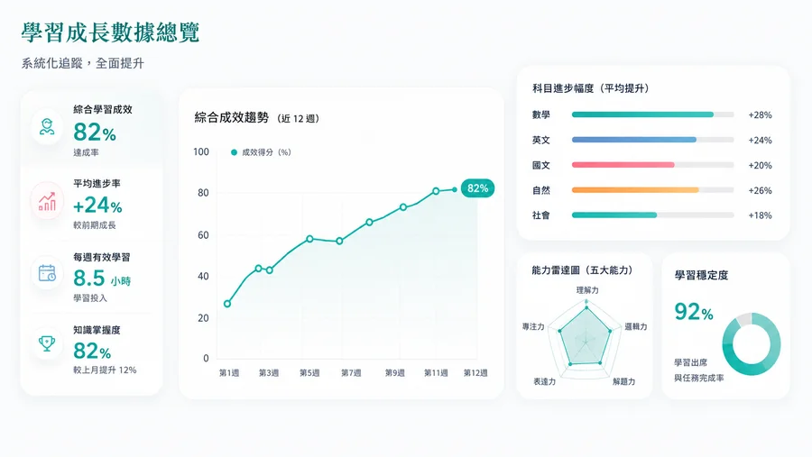

學習成長數據
進步看得見
時間、任務、弱點與回饋整理成家長看得懂的證據。

我們用數據記錄學習成長，用成果見證改變。每一位孩子的努力，都有跡可循、看得見。

時間、任務、弱點與回饋整理成家長看得懂的證據。
我們相信，真正的教育成效來自可量化的成長與真實的改變。
透過科學數據追蹤，清楚呈現分數與能力提升。
培養自主學習與時間管理，讓進步成為日常。
看見自己的成長，建立自信，主動追求更好的自己。
透明數據與專業回饋，讓家長放心，孩子開心。
系統化追蹤，全面提升

真實案例，真實進步
從迷惘到穩定進步，透過個人化學習與問題診斷分析，建立解題邏輯，成績大幅提升！
英文從怕到愛上，透過閱讀與文法弱點練習，英文成績明顯進步！
建立信心，突破自我。從害怕應用題到能獨立解題，一步步建立數學自信！
來自伴伴辦學學員的真實數據（近 90 天統計）
來自家長的鼓勵與肯定
孩子的數學從 50 分進步到 85 分，更重要的是，他現在會主動安排時間學習，真的很感謝伴伴！
老師會根據孩子的狀況調整計畫，每週都有明確回饋，讓我們很放心把孩子交給伴伴。
孩子英文一直是弱項，現在不只分數進步，還會主動閱讀英文文章，真的看見改變！
線上週報很清楚，我知道孩子在哪裡進步，也知道接下來該如何陪他。